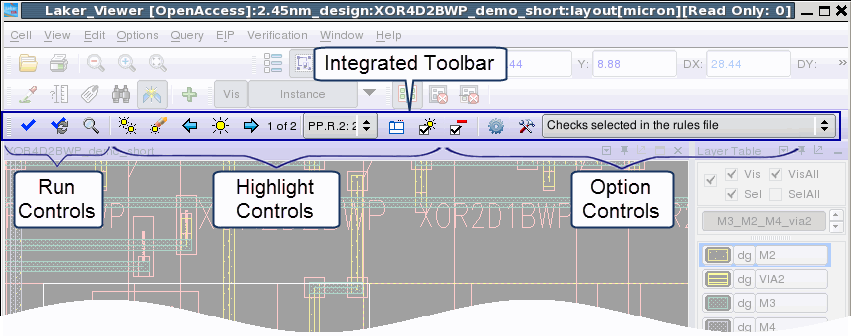

Invoking Synopsys
Laker with Calibre RealTime adds the Calibre RealTime integrated
toolbar to the design window.
Procedure
- Start Synopsys Laker with
the following command:
$LAKER_HOME/bin/laker <options>
A view of the design window
in Synopsys Laker3 is
shown in the following figure. The Calibre RealTime Integrated Toolbar (Laker) is loaded automatically in the
Synopsys Laker window.
Figure 1. Calibre RealTime Integration with Synopsys Laker
- Proceed to “Specifying and Using Multiple Run Configurations in Calibre RealTime (Laker)”.